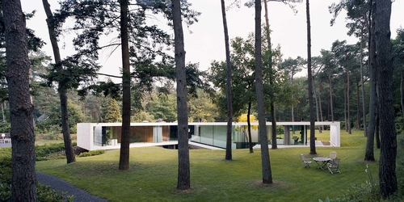

WE BUILD
THE FUTURE
FOR YOU!
Luxury villa
To take advantage of the beautiful woodland views, we imagined the distictive Y-shape of the house, wich creates three wings, each glazed on both sides. There's a wing for work, study and music; one for cooking and eating; and one for living and painting.
In the basement, the Y creates a similar functional clarity: one wing is for the master bedroom; one for cars; and one the guest room and storage.
A patio provides light (and a separate entrance) for the guest rooms. The central area where all the wings meet is the heart of the house. It forms a large space that serves as entrance hall, dining room, bar and music room.